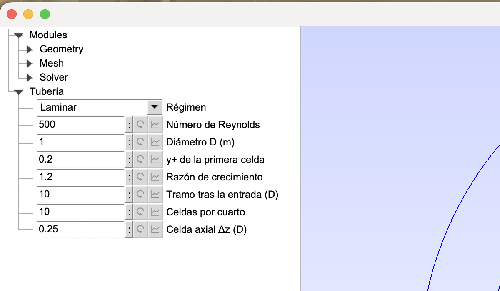
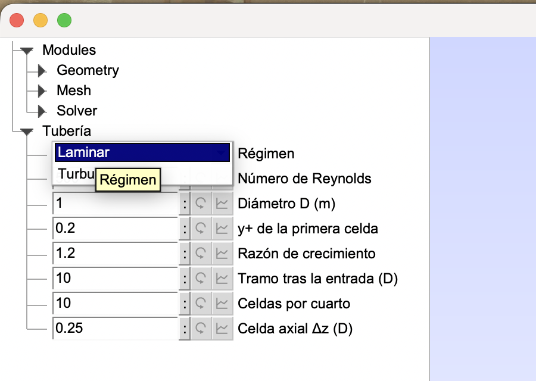
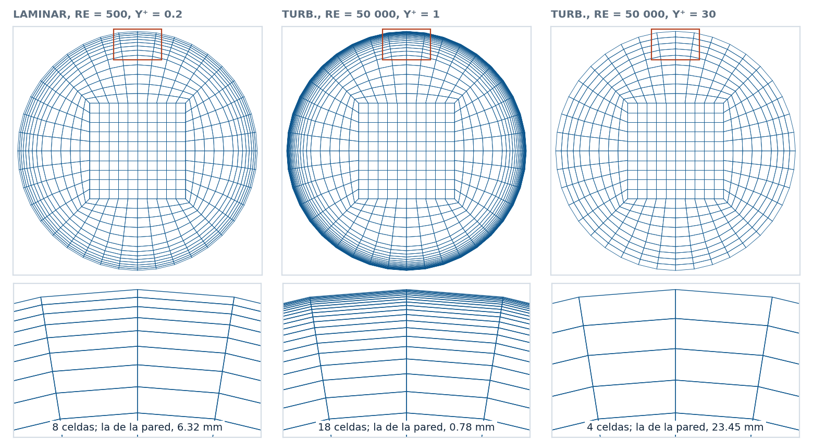
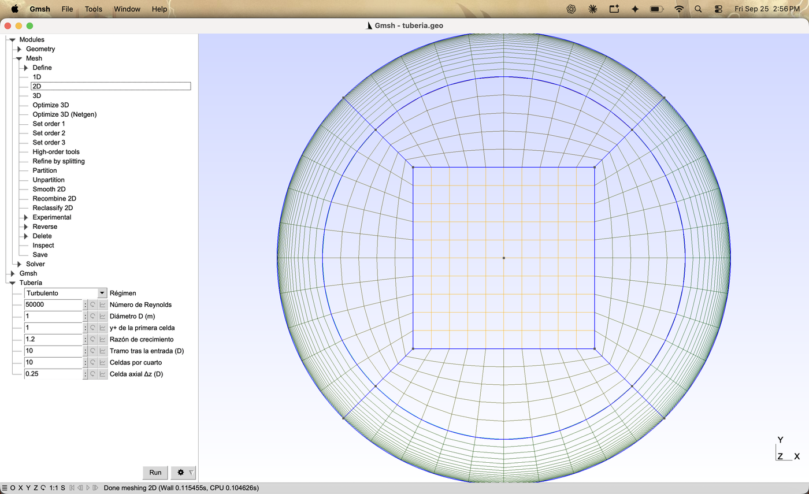
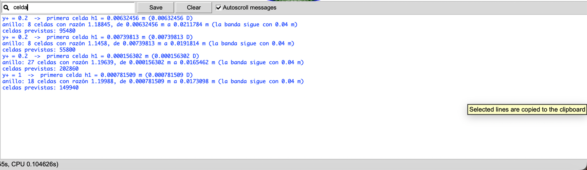
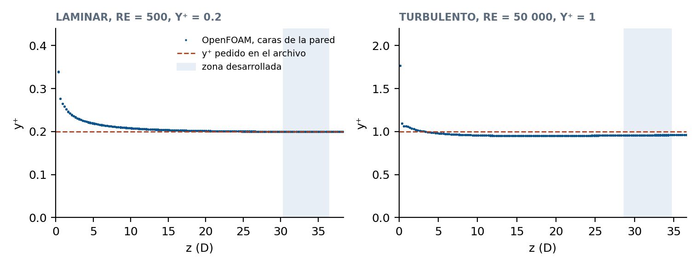

The Parametric Pipe: First Cell from y⁺ and Length from Re
The pipe of tutorial 3.1.1, now controlled by eight parameters from the Gmsh panel or the terminal. The file computes the wall cell from the y⁺ you ask for and the length from the Reynolds number, and OpenFOAM measures back the y⁺ that was requested.
Gmsh · Tutorial 3.1.2
La tubería parametrizada: primera celda desde y⁺ y longitud desde Re
La tubería del tutorial 3.1.1, ahora controlada por ocho parámetros desde el panel de Gmsh o desde la terminal. El archivo calcula la celda de la pared a partir del y⁺ que se pide y la longitud a partir del número de Reynolds, y OpenFOAM mide de vuelta el y⁺ que se pidió.
Gmsh · Tutorial 3.1.2
Das parametrische Rohr: erste Zelle aus y⁺ und Länge aus Re
Das Rohr aus Tutorial 3.1.1, jetzt über acht Parameter im Gmsh-Feld oder im Terminal gesteuert. Die Datei berechnet die Wandzelle aus dem gewünschten y⁺ und die Länge aus der Reynolds-Zahl, und OpenFOAM misst das verlangte y⁺ nach.
Estimated reading: 40 minLectura estimada: 40 minLesedauer: ca. 40 minLevel: undergraduateNivel: licenciaturaNiveau: BachelorVerified on Gmsh 4.15.2 and OpenFOAM 13Verificado en Gmsh 4.15.2 y OpenFOAM 13Geprüft mit Gmsh 4.15.2 und OpenFOAM 13
Full English translation in preparation. Each section below carries a summary of its content; the complete text, figures and tables are available in the Spanish version, which the ES button above selects.
Turn the fixed numbers of the straight-pipe file into parameters that the Gmsh panel and the command line can change; compute the first-cell height from a target y⁺, the boundary-layer ring from a growth ratio and the length from the entrance length; check in OpenFOAM that the requested y⁺ is the measured one.
The idea
Three numbers the flow decides
The wall cell follows from y⁺ and the friction factor, h = 2 y⁺ D / (Re √(f/8)); the number of layers follows from a maximum growth ratio; the length follows from the entrance length, laminar or turbulent.
Recipe
From the 3.1.1 file to the parametric file in seven steps
Seven steps from the 3.1.1 file to the parametric one.
Step 1
Eight parameters and a drop-down list
DefineConstant with Name and, for the flow regime, Choices, which the panel shows as a drop-down list. A slash inside a label splits it into a new branch of the panel.
Step 2
From y⁺ to metres
The friction factor (64/Re or Petukhov) gives the viscous length ν/u_τ = D/(Re √(f/8)); y⁺ is measured at the cell centre, so the cell height is twice y⁺ times that length.
Step 3
How many layers, and with what ratio
The number of layers is the smallest that keeps the growth below the maximum ratio; a bisection macro finds the exact ratio for that whole number.
Step 4
The entrance length decides
Laminar entrance length from Durst et al., turbulent from 4.4 Re^(1/6); ten diameters are added.
Step 5
The same geometry, with no fixed number
Points, Transfinite and Extrude take expressions; the ring lines use Progression 1/g toward the wall.
Step 6
Changing the flow from the interface
Changing a field re-reads the file, recomputes everything and deletes the mesh; the Printf lines appear in Tools > Message Console, which has a search field.
Step 7
Three meshes from one file
-setnumber with the variable name builds each case without opening the interface.
Worked example
The turbulent mesh, predicted by hand
The turbulent case at Re = 50 000 and y⁺ = 1, computed by hand and compared with the file.
OpenFOAM check
Is the y⁺ that was asked for the y⁺ that comes out?
Laminar: the measured y⁺ is 0.1996 for 0.2 requested. Turbulent (k-ω SST): 0.958 for 1, because the model gives a friction factor below the correlation; the ratio of the two explains the difference.
File
tuberia.geo, complete
The whole parametric file.
Suggested practice
Three meshes for the course activity
The three meshes of the course activity: laminar, turbulent resolved and with wall functions.
Key points
What to keep from this guide
Parameters for what the flow decides; everything else computed.
Common mistakes
What goes wrong and what Gmsh does
A slash in a label, a y⁺ that is half the requested one, a ring with too few layers.
Sources
References
Gmsh manual; White; Petukhov; Durst et al.; OpenFOAM 13 user guide.
Objetivos de aprendizaje
Qué se debe poder hacer al terminar
En el 3.1.1 la tubería se construyó con los botones y quedó un archivo con números fijos: 11 nodos por cuarto de vuelta, una razón de 0.85, 10 m de largo. Esos números estaban bien para un flujo laminar con Re = 100 y para ningún otro. Aquí el archivo se reescribe para que los números salgan del flujo: se pide el régimen, el número de Reynolds y el y⁺ de la primera celda, y el archivo calcula la altura de esa celda, cuántas capas caben junto a la pared y qué tan larga debe ser la tubería.
Declarar parámetros que aparezcan en el panel de la interfaz, incluido un desplegable con Choices, y que también obedezcan a -setnumber en la terminal.
Calcular la altura de la primera celda a partir de un y⁺ buscado, en régimen laminar y turbulento.
Llenar el anillo de la pared con una progresión cuya razón no pase de un máximo, usando una macro con bisección.
Elegir la longitud de la tubería a partir de la longitud de entrada.
Comprobar en OpenFOAM que el y⁺ que se pidió es el que se mide.
Qué hace falta. Gmsh 4.15.2 y OpenFOAM (openfoam.org). Se supone el 3.1.1, cuyo archivo es el punto de partida, y el uso de DefineConstant con Name del 2.1. La macro de bisección viene del 2.2.2.
La idea
Tres números que decide el flujo
De todo lo que tiene la malla de una tubería, tres cosas dependen del flujo y no de la geometría: la altura de la celda junto a la pared, cuántas celdas hay en la zona donde la velocidad cambia rápido y qué tan larga es la tubería. Las tres se pueden calcular antes de mallar.
La celda de la pared
Cerca de la pared, las distancias se miden en longitudes viscosas, ν/uτ, donde uτ = √(τw/ρ) es la velocidad de fricción. La distancia adimensional y⁺ = y uτ/ν es la que usan los modelos de turbulencia para decidir cómo tratar la pared: con y⁺ ≈ 1 resuelven la subcapa viscosa, con y⁺ entre 30 y 100 usan funciones de pared. En una tubería, el esfuerzo en la pared sale del factor de fricción de Darcy, τw = f ρU²/8, de modo que
El factor 2 viene de que y⁺ mide la distancia del centro de la primera celda a la pared, no la de su cara exterior (tutorial 2.2.2). El factor de fricción es 64/Re en laminar; en turbulento, con tubo liso, la correlación de Petukhov, f = (0.790 ln Re − 1.64)−2, válida de 3000 a 5·106.
La longitud
El perfil de velocidad necesita una longitud de entrada Le para desarrollarse. En laminar crece con Re (Durst et al., 2005); en turbulento crece muy poco:
Con Re = 500 dan 28.4 D; con Re = 50 000, 26.7 D. La tubería mide Le más un tramo desarrollado donde se toman las medidas.
Receta
Del archivo del 3.1.1 al archivo paramétrico en siete pasos
Se parte de tuberia_recta.geo, el archivo del 3.1.1. Los pasos 1 a 5 reescriben el archivo; los 6 y 7 lo usan.
Parámetros. Un bloque DefineConstant con los ocho parámetros de la tabla 1, cada uno con Name "Tubería/…"; el régimen, con Choices.
La celda de la pared. Con If (regimen == 0), el factor de fricción; después ν/uτ y h1.
El anillo. El número de capas con Ceil y la razón exacta con la macro Razon.
La longitud. Le con otro If, y L = Le + Ldes·D.
Números a expresiones. Las coordenadas con R, rm y a; Transfinite con nq, nr, nb y g; Layers{nz}. Unos Printf con lo calculado.
El panel. Abrir el archivo en Gmsh: aparece la rama Tubería (figura 1). Cambiar un campo, Mesh ▸ 3D, y leer en Tools ▸ Message Console lo que se calculó.
La terminal.gmsh tuberia.geo -3 -setnumber regimen 1 -setnumber Re 50000 -setnumber yplus 1 -o tuberia.msh; responde, entre otras líneas, anillo: 18 celdas con razón 1.19988… y celdas previstas: 149940.
Paso 1
Ocho parámetros y un desplegable
DefineConstant[
regimen = {0, Choices{0 = "Laminar", 1 = "Turbulento"}, Name "Tubería/1Régimen"},
Re = {500, Name "Tubería/2Número de Reynolds"},
D = {1, Name "Tubería/3Diámetro D (m)"},
yplus = {0.2, Name "Tubería/4y+ de la primera celda"},
gmax = {1.2, Name "Tubería/5Razón de crecimiento"},
Ldes = {10, Name "Tubería/6Tramo tras la entrada (D)"},
nq = {10, Name "Tubería/7Celdas por cuarto"},
dz = {0.25, Name "Tubería/8Celda axial Δz (D)"}
];
Variable
Rótulo en el panel
Por omisión
Qué controla
regimen
Régimen
0 (Laminar)
el factor de fricción y la longitud de entrada; es un desplegable
Re
Número de Reynolds
500
Re = UD/ν, con la velocidad media
D
Diámetro D (m)
1
la escala de todo
yplus
y+ de la primera celda
0.2
la altura de la celda junto a la pared
gmax
Razón de crecimiento
1.2
cuánto crece cada celda del anillo sobre la anterior, como máximo
Ldes
Tramo tras la entrada (D)
10
la longitud que se agrega a la de entrada
nq
Celdas por cuarto
10
la resolución de la sección (cuadro, arcos y banda)
dz
Celda axial Δz (D)
0.25
el largo de los hexaedros
Tabla 1.Los ocho parámetros del panel «Tubería». El número al principio del rótulo sólo fija el orden en el panel (tutorial 2.1). Todos se pueden dar desde la terminal con -setnumber y el nombre de la variable.
Todos llevan Name, así que aparecen en el panel (figura 1) y siguen obedeciendo a -setnumber con el nombre de la variable, como en el 2.1. El régimen agrega Choices{0 = "Laminar", 1 = "Turbulento"}: en el panel se ve como un desplegable con esos dos rótulos (figura 2), y en el archivo la variable vale 0 o 1.

Figura 1.El panel «Tubería». Al abrir tuberia.geo aparece la rama Tubería debajo de Modules. El primer campo es un desplegable porque su DefineConstant lleva Choices; los demás son campos numéricos. La columna se ensanchó arrastrando su borde derecho.

Figura 2.El desplegable del régimen. Muestra los rótulos de Choices, «Laminar» y «Turbulento»; al elegir uno, la variable regimen toma el número asociado, 0 o 1.
Ninguna diagonal en los rótulos. Gmsh usa la diagonal para separar ramas del panel. Un rótulo «Número de Reynolds U D/ν» creó una subrama «Número de Reynolds U D» con un campo llamado «ν». Los rótulos largos, además, se cortan a la derecha de la columna: conviene que sean breves.
Los parámetros son las decisiones de quien hace la simulación. Lo que se puede deducir de ellos —el factor de fricción, la altura de la celda, el número de capas, la longitud— no se pone en el panel: se calcula.
Paso 2
De y⁺ a metros
// ------------------------------------------------ factor de fricción y velocidad de fricción
// Laminar: Hagen-Poiseuille. Turbulento (tubo liso): Petukhov, válido de 3000 a 5·10^6.
If (regimen == 0)
f = 64 / Re;
Else
f = 1 / (0.790 * Log(Re) - 1.64)^2;
EndIf
// u_tau / U = Sqrt(f/8); en longitudes: nu / u_tau = D / (Re Sqrt(f/8))
lv = D / (Re * Sqrt(f / 8)); // longitud viscosa nu/u_tau (m)
// y+ mide la distancia del CENTRO de la primera celda a la pared: la altura es el doble.
h1 = 2 * yplus * lv;
If, Else y EndIf eligen la fórmula según el régimen; Log es el logaritmo natural. La variable lv es la longitud viscosa ν/uτ escrita sólo con D, Re y f, así que la tubería no necesita la velocidad ni la viscosidad: basta el número de Reynolds.
Con Re = 50 000, Petukhov da f = 0.0210, ν/uτ = 0.391 mm y, para y⁺ = 1, h1 = 0.782 mm. Con Re = 500 laminar, f = 64/500 = 0.128, ν/uτ = 15.81 mm y, para y⁺ = 0.2, h1 = 6.32 mm (tabla 2).
¿Y⁺ en flujo laminar? En laminar no hay modelo de pared que satisfacer, pero y⁺ sigue siendo una medida de la celda de la pared en longitudes viscosas, y el archivo la trata igual. Con y⁺ = 0.2 y Re = 500 la celda mide 6.32 mm; la del 3.1.1, que reprodujo Hagen-Poiseuille con un error del 1 %, medía 6.61 mm con Re = 100, que equivale a y⁺ = 0.09. En laminar basta un y⁺ entre 0.1 y 0.5.
Paso 3
Cuántas capas y con qué razón
El anillo va del círculo intermedio (r = 0.8 R) a la pared: un espesor t = 0.1 D. Sus celdas empiezan en h1 junto a la pared y crecen hacia adentro. Una progresión de n celdas con razón g llena
\[ t = h_1\,\frac{g^{\,n}-1}{g-1} \quad\Longrightarrow\quad n = \left\lceil \frac{\ln\left[1 + t\,(g_{\max}-1)/h_1\right]}{\ln g_{\max}} \right\rceil . \]
Con la razón máxima permitida, gmáx = 1.2 por omisión, se despeja n y se redondea hacia arriba (Ceil): con un número entero de celdas la progresión ya no cabe exacta, y la razón se vuelve a buscar, un poco menor, con la macro Razon del 2.2.2, que la encuentra por bisección.
Macro Razon
rA = 1.0 + 1.e-9; rB = 3.0;
For iter In {1:80}
rM = 0.5 * (rA + rB);
sM = eh1 * (rM^(eN - 1) - 1.0) / (rM - 1.0);
If (sM < eL)
rA = rM;
Else
rB = rM;
EndIf
EndFor
eR = 0.5 * (rA + rB);
Return
eL = R - rm; eh1 = h1;
eN = 1 + Ceil(Log(1 + eL * (gmax - 1) / h1) / Log(gmax));
Call Razon;
nb = eN; g = eR; // nodos del anillo y razón de crecimiento desde la pared
hN = h1 * g^(nb - 2); // la celda del anillo junto al círculo intermedio
hb = (rm - a) / nr; // la celda de la banda, a media altura del cuadro
En turbulento, con y⁺ = 1, salen 18 celdas con razón 1.200; la última, junto al círculo intermedio, mide 17.3 mm. En laminar salen 8 con razón 1.188. Con y⁺ = 30 la celda de la pared ya mide 23.4 mm y el anillo tiene sólo 4 (figura 3).
Por qué no se fijan los dos extremos. La primera versión de este archivo fijaba la celda de la pared y la del otro extremo, igual a la de la banda (0.04 D), como la macro Empalme del 2.2.2. Con esos dos datos la razón queda determinada: g = (t − h1)/(t − hN), que con t = 0.1 D y hN = 0.04 D queda entre 1.5 y 1.67 para cualquier celda de pared menor de 1 cm. Salían cinco celdas con razón 1.6 en laminar. Fijar la razón máxima deja un salto de tamaño entre el anillo y la banda (de 17.3 a 40 mm en turbulento), que se reduce con más celdas por cuarto.

Figura 3.Tres mallas de un mismo archivo. La sección de entrada de las mallas de la tabla 2, trazada desde los .msh; abajo, el recuadro rojo de cerca. Sólo cambian el régimen, Re e y⁺: el cuadro central y la banda son iguales en las tres, y el anillo junto a la pared pasa de 8 a 18 celdas y de nuevo a 4.
Paso 4
La longitud de entrada decide
// ------------------------------------------------ longitud: entrada más tramo desarrollado
If (regimen == 0)
Le = D * (0.619^1.6 + (0.0567 * Re)^1.6)^(1 / 1.6); // Durst et al. (2005)
Else
Le = D * 4.4 * Re^(1 / 6); // White, Fluid Mechanics
EndIf
L = Le + Ldes * D;
Ldes, 10 diámetros por omisión, es el tramo que se agrega después de la longitud de entrada; ahí se mide. La tubería laminar de Re = 500 queda de 38.4 D y la turbulenta de Re = 50 000, de 36.7 D. Con Re = 2000 laminar, la entrada sola mide 113 D y la tubería 123 D, con 365 560 celdas: es el caso que más celdas pide.
Paso 5
La misma geometría, sin ningún número fijo
El resto del archivo es el del 3.1.1 con cada número sustituido: las coordenadas se escriben con R, rm y a; los nodos con nq, nr y nb; la extrusión con L y nz.
// ------------------------------------------------ malla: todos los números salen de los parámetros
Transfinite Curve {1:4, 13:20} = nq + 1;
Transfinite Curve {5:8} = nr + 1;
Transfinite Curve {9:12} = nb Using Progression 1 / g; // las líneas van hacia la pared: cada celda 1/g de la anterior
Transfinite Surface {1:9};
Recombine Surface {1:9};
Las líneas 9 a 12 van del círculo intermedio hacia la pared, y Progression multiplica cada celda por la razón en el sentido de la curva. Como las celdas deben adelgazarse hacia la pared, la razón que se escribe es 1/g. Midiendo los nodos de la línea 9 en las mallas, la celda de la pared mide exactamente h1: 6.325 mm en laminar y 0.782 mm en turbulento.
El número de celdas se predice con los bloques del 3.1.1: nq² en el cuadro, 4·nq·nr en la banda y 4·nq·n en el anillo, por nz capas. El archivo lo escribe como «celdas previstas».
Paso 6
Cambiar el flujo desde la interfaz
File ▸ Open y tuberia.geo. Aparece la rama Tubería; ensanchar la columna arrastrando su borde derecho.
En Régimen, elegir «Turbulento»; en Número de Reynolds, 50000 e Intro; en y+ de la primera celda, 1 e Intro. Cada cambio vuelve a leer el archivo con el valor nuevo.
Mesh ▸ 2D (o 3D): el anillo tiene ahora 18 celdas (figura 4).
Tools ▸ Message Console y, en el buscador de la consola, «celda»: quedan sólo las líneas de los Printf, una tanda por cada vez que se leyó el archivo (figura 5).

Figura 4.El caso turbulento, desde el panel. Régimen «Turbulento», Re = 50 000 e y⁺ = 1 escritos en el panel y Mesh ▸ 2D. Las 18 celdas del anillo forman la franja oscura junto a la pared.

Figura 5.Lo que el archivo recalcula en cada cambio.Tools ▸ Message Console, con «celda» en el buscador. Cada cambio en el panel vuelve a leer el archivo y repite los Printf: de arriba abajo, el caso laminar, el régimen cambiado a turbulento con Re = 500, Re = 50 000 con y⁺ = 0.2, e y⁺ = 1.
Cada cambio borra la malla. Al volver a leer el archivo, Gmsh descarta la malla anterior: hay que mallar otra vez. Y el panel no escribe en el archivo, pero recuerda los valores durante la sesión, también al abrir otro archivo; se limpian con el engrane, junto a Run, ▸ Reset database (tutorial 2.1).
Paso 7
Tres mallas de un solo archivo
Desde la terminal no hace falta abrir la interfaz: cada -setnumber cambia un parámetro por su nombre de variable. Las tres mallas de la tabla 2 salen de un solo archivo:
Tabla 2.Lo que calcula el archivo en cada caso. Con D = 1 m y los demás parámetros por omisión, salvo en la malla fina (16 celdas por cuarto, razón 1.15, Δz = 0.2 D). Son las líneas que el archivo escribe con Printf; ν/uτ es la longitud viscosa y h1 la altura de la primera celda.
El número de celdas que predice el archivo es exactamente el que cuenta checkMesh: 95 480 en laminar y 149 940 en turbulento con y⁺ = 1.
Para ver lo que calcula el archivo sin mallar, basta -0 en lugar de -3: gmsh tuberia.geo -0 -setnumber regimen 1 -setnumber Re 50000 -setnumber yplus 30 escribe las líneas de los Printf (con y⁺ = 30, «anillo: 4 celdas con razón 1.04297…») y termina en un instante. De paso deja un archivo tuberia.geo_unrolled, que es el .geo ya evaluado y se puede borrar.
Ejemplo resuelto
La malla turbulenta, predicha a mano
Enunciado. Para una tubería de D = 1 m con Re = 50 000 y un modelo k-ω SST que pide y⁺ ≈ 1, calcular a mano la altura de la primera celda, el número de celdas del anillo con gmáx = 1.2 y la longitud; comparar con lo que escribe el archivo.
Condiciones. Tubo liso; anillo de 0.1 D; tramo desarrollado de 10 D.
Factor de fricción. ln 50 000 = 10.82, así que f = (0.790 × 10.82 − 1.64)−2 = 0.0210. Para comparar, Blasius, f = 0.316 Re−1/4, da 0.0211.
Longitud viscosa y celda. √(f/8) = 0.0512, ν/uτ = 1/(50 000 × 0.0512) = 0.391 mm y h1 = 2 × 1 × 0.391 = 0.782 mm.
Capas. n = ⌈ln(1 + 0.1 × 0.2/0.000782)/ln 1.2⌉ = ⌈17.99⌉ = 18; la razón exacta para 18 celdas es 1.1999.
Longitud. Le = 4.4 × 50 0001/6 = 26.7 D y L = 36.7 D.
El archivo escribe los mismos valores (tabla 2).
Preguntas.
¿Qué pasa con la celda de la pared si se duplica el número de Reynolds? Respuesta: ν/uτ ∝ 1/(Re √f), y f baja poco; la celda se reduce a algo más de la mitad. Con Re = 100 000 el archivo da h1 = 0.42 mm, contra 0.78 mm con Re = 50 000.
¿Por qué el anillo turbulento con y⁺ = 30 tiene sólo cuatro celdas? Respuesta: la celda de la pared ya mide 23.4 mm, casi un cuarto del anillo; con funciones de pared no se resuelve la subcapa viscosa, así que no hacen falta más.
¿Qué parámetro hay que cambiar para que el salto entre el anillo y la banda sea menor? Respuesta: las celdas por cuarto: con 16, la banda baja de 40 a 25 mm (malla fina de la tabla 2).
Comprobación en OpenFOAM
¿Sale el y⁺ que se pidió?
La prueba de este archivo no es otra vez Hagen-Poiseuille (ya se hizo en el 3.1.1) sino la parametrización misma: si se pide y⁺ = 1, ¿OpenFOAM mide y⁺ = 1 en la pared?
Los casos
Laminar, Re = 500: U = 1 m/s y ν = 0.002 m²/s; simulationType laminar.
Turbulento, Re = 50 000: ν = 2·10−5 m²/s; k-ω SST con k = 0 en la pared, omegaWallFunction y nutLowReWallFunction, que es lo que corresponde a y⁺ ≈ 1; intensidad de turbulencia del 5 % en la entrada.
En los dos, velocidad uniforme en la entrada, presión 0 en la salida y la pared cambiada a tipo wall después de gmshToFoam. El y⁺ se calcula con foamPostProcess -solver incompressibleFluid -func yPlus y el esfuerzo en la pared con -func wallShearStress; se promedian en el tramo desarrollado, de L − 8 D a L − 2 D.

Figura 6.El y⁺ medido en la pared. Un punto por cara de la pared, de la entrada (z = 0) a la salida. Cerca de la entrada la capa límite es delgada y el esfuerzo cortante, mayor, así que y⁺ crece; en la zona desarrollada (sombreada) se estabiliza. En laminar coincide con lo pedido; en turbulento queda un 4 % abajo (sección «Comprobación en OpenFOAM»).
Caso
Celdas
y⁺ pedido
y⁺ medido
f de referencia
f medido
Diferencia en f
Laminar, Re = 500, y⁺ = 0.2
95 480
0.20
0.200
0.1280
0.1289
0.7 %
Turbulento, Re = 50 000, y⁺ = 1
149 940
1.00
0.958
0.0210
0.0194
−7.6 %
Turbulento, malla fina
400 384
1.00
0.962
0.0210
0.0195
−7.1 %
Tabla 3.Lo que pidió el archivo y lo que midió OpenFOAM. OpenFOAM 13, estacionario; laminar con Re = 500 (ν = 0.002 m²/s) y turbulento con k-ω SST y Re = 50 000 (ν = 2·10⁻⁵ m²/s), U = 1 m/s. El y⁺ medido es el promedio sobre la pared entre L − 8 D y L − 2 D; el factor de fricción medido sale del esfuerzo cortante en la misma zona, f = 8τw/(ρU²). La referencia es 64/Re en laminar y Petukhov en turbulento.
Laminar
Se pidió y⁺ = 0.2 y se mide 0.1996. El factor de fricción medido, 0.1289, difiere del teórico, 64/Re = 0.128, en 0.7 %.
Turbulento
Se pidió y⁺ = 1 y se mide 0.958, un 4 % menos. No es un error del archivo: el y⁺ que mide OpenFOAM usa la velocidad de fricción de la propia simulación, y el modelo k-ω SST da un factor de fricción de 0.0194, un 7.6 % por debajo de Petukhov. Como uτ ∝ √f, el y⁺ medido debe ser el pedido por √(fmedido/fPetukhov) = 0.961, que es lo que se mide. La malla fina, con 16 celdas por cuarto, razón 1.15 y Δz = 0.2 D (400 384 celdas), da y⁺ = 0.962 y f = 0.0195, un 0.5 % más que la malla gruesa: la diferencia con Petukhov no es de resolución de la malla sino del modelo.
Qué garantiza el cálculo. El archivo acierta la altura de la celda con la precisión de la correlación de fricción. Si el modelo de turbulencia da otra fricción, el y⁺ cambia en la raíz de esa diferencia: un 8 % en f son un 4 % en y⁺. Para y⁺ ≈ 1 o y⁺ ≈ 30, ese margen no importa.
Archivo
tuberia.geo, completo
tuberia.geo
// Tubería recta parametrizada (tutorial 3.1.2): la sección en O de 9 bloques del 3.1.1, con la primera celda
// calculada desde y+ y la longitud desde el número de Reynolds. Unidades: metros.
// Cada parámetro se cambia en el panel «Tubería» de la interfaz o desde la terminal. En los rótulos no puede ir
// una diagonal: Gmsh la toma como separador de ramas del panel.
// gmsh tuberia.geo -3 -setnumber regimen 1 -setnumber Re 50000 -o tuberia.msh
SetFactory("Built-in");
DefineConstant[
regimen = {0, Choices{0 = "Laminar", 1 = "Turbulento"}, Name "Tubería/1Régimen"},
Re = {500, Name "Tubería/2Número de Reynolds"},
D = {1, Name "Tubería/3Diámetro D (m)"},
yplus = {0.2, Name "Tubería/4y+ de la primera celda"},
gmax = {1.2, Name "Tubería/5Razón de crecimiento"},
Ldes = {10, Name "Tubería/6Tramo tras la entrada (D)"},
nq = {10, Name "Tubería/7Celdas por cuarto"},
dz = {0.25, Name "Tubería/8Celda axial Δz (D)"}
];
// ------------------------------------------------ geometría de la sección (proporciones del 3.1.1)
R = D / 2;
rm = 0.8 * R; // círculo intermedio: el anillo de la capa límite ocupa el 20 % exterior del radio
a = 0.4 * R; // semilado del cuadro central
// ------------------------------------------------ factor de fricción y velocidad de fricción
// Laminar: Hagen-Poiseuille. Turbulento (tubo liso): Petukhov, válido de 3000 a 5·10^6.
If (regimen == 0)
f = 64 / Re;
Else
f = 1 / (0.790 * Log(Re) - 1.64)^2;
EndIf
// u_tau / U = Sqrt(f/8); en longitudes: nu / u_tau = D / (Re Sqrt(f/8))
lv = D / (Re * Sqrt(f / 8)); // longitud viscosa nu/u_tau (m)
// y+ mide la distancia del CENTRO de la primera celda a la pared: la altura es el doble.
h1 = 2 * yplus * lv;
// ------------------------------------------------ longitud: entrada más tramo desarrollado
If (regimen == 0)
Le = D * (0.619^1.6 + (0.0567 * Re)^1.6)^(1 / 1.6); // Durst et al. (2005)
Else
Le = D * 4.4 * Re^(1 / 6); // White, Fluid Mechanics
EndIf
L = Le + Ldes * D;
// ------------------------------------------------ nodos de la sección
hs = 2 * a / nq; // lado de las celdas del cuadro central
nr = Round((rm - a) / hs); // celdas de la banda, del cuadro al círculo intermedio
// El anillo va de h1 en la pared hacia el círculo intermedio, creciendo a lo más gmax por celda. La suma de la
// progresión, h1 (g^n − 1)/(g − 1) = t, da el número de celdas n; se redondea hacia arriba y la macro Razon (la del
// 2.2.2) busca por bisección la razón exacta que llena el anillo con esas n celdas.
Macro Razon
rA = 1.0 + 1.e-9; rB = 3.0;
For iter In {1:80}
rM = 0.5 * (rA + rB);
sM = eh1 * (rM^(eN - 1) - 1.0) / (rM - 1.0);
If (sM < eL)
rA = rM;
Else
rB = rM;
EndIf
EndFor
eR = 0.5 * (rA + rB);
Return
eL = R - rm; eh1 = h1;
eN = 1 + Ceil(Log(1 + eL * (gmax - 1) / h1) / Log(gmax));
Call Razon;
nb = eN; g = eR; // nodos del anillo y razón de crecimiento desde la pared
hN = h1 * g^(nb - 2); // la celda del anillo junto al círculo intermedio
hb = (rm - a) / nr; // la celda de la banda, a media altura del cuadro
nz = Round(L / (dz * D)); // capas a lo largo del eje
N3 = (nq^2 + 4 * nq * nr + 4 * nq * (nb - 1)) * nz;
Printf("Re = %g f = %g nu/u_tau = %g m", Re, f, lv);
Printf("y+ = %g -> primera celda h1 = %g m (%g D)", yplus, h1, h1 / D);
Printf("anillo: %g celdas con razón %g, de %g m a %g m (la banda sigue con %g m)", nb - 1, g, h1, hN, hb);
Printf("longitud de entrada Le = %g D; tubería L = %g D en %g capas", Le / D, L / D, nz);
Printf("celdas previstas: %g", N3);
// ------------------------------------------------ puntos, curvas y superficies (como el 3.1.1)
Point(1) = {0, 0, 0};
Point(2) = {a, a, 0}; Point(3) = {-a, a, 0}; Point(4) = {-a, -a, 0}; Point(5) = {a, -a, 0};
Point(6) = {rm*Cos(Pi/4), rm*Sin(Pi/4), 0}; Point(7) = {-rm*Cos(Pi/4), rm*Sin(Pi/4), 0};
Point(8) = {-rm*Cos(Pi/4), -rm*Sin(Pi/4), 0}; Point(9) = {rm*Cos(Pi/4), -rm*Sin(Pi/4), 0};
Point(10) = {R*Cos(Pi/4), R*Sin(Pi/4), 0}; Point(11) = {-R*Cos(Pi/4), R*Sin(Pi/4), 0};
Point(12) = {-R*Cos(Pi/4), -R*Sin(Pi/4), 0}; Point(13) = {R*Cos(Pi/4), -R*Sin(Pi/4), 0};
Line(1) = {2, 3}; Line(2) = {3, 4}; Line(3) = {4, 5}; Line(4) = {5, 2}; // cuadro central
Line(5) = {2, 6}; Line(6) = {3, 7}; Line(7) = {4, 8}; Line(8) = {5, 9}; // cuadro → círculo intermedio
Line(9) = {6, 10}; Line(10) = {7, 11}; Line(11) = {8, 12}; Line(12) = {9, 13}; // círculo intermedio → pared
Circle(13) = {6, 1, 7}; Circle(14) = {7, 1, 8}; Circle(15) = {8, 1, 9}; Circle(16) = {9, 1, 6};
Circle(17) = {10, 1, 11}; Circle(18) = {11, 1, 12}; Circle(19) = {12, 1, 13}; Circle(20) = {13, 1, 10};
Curve Loop(1) = {1, 2, 3, 4}; Plane Surface(1) = {1};
Curve Loop(2) = {1, 6, -13, -5}; Plane Surface(2) = {2};
Curve Loop(3) = {2, 7, -14, -6}; Plane Surface(3) = {3};
Curve Loop(4) = {3, 8, -15, -7}; Plane Surface(4) = {4};
Curve Loop(5) = {4, 5, -16, -8}; Plane Surface(5) = {5};
Curve Loop(6) = {13, 10, -17, -9}; Plane Surface(6) = {6};
Curve Loop(7) = {14, 11, -18, -10}; Plane Surface(7) = {7};
Curve Loop(8) = {15, 12, -19, -11}; Plane Surface(8) = {8};
Curve Loop(9) = {16, 9, -20, -12}; Plane Surface(9) = {9};
// ------------------------------------------------ malla: todos los números salen de los parámetros
Transfinite Curve {1:4, 13:20} = nq + 1;
Transfinite Curve {5:8} = nr + 1;
Transfinite Curve {9:12} = nb Using Progression 1 / g; // las líneas van hacia la pared: cada celda 1/g de la anterior
Transfinite Surface {1:9};
Recombine Surface {1:9};
ext[] = Extrude {0, 0, L} { Surface{1:9}; Layers{nz}; Recombine; };
Physical Surface("inlet") = {1:9};
Physical Surface("outlet") = {ext[0], ext[6], ext[12], ext[18], ext[24], ext[30], ext[36], ext[42], ext[48]};
Physical Surface("walls") = {ext[34], ext[40], ext[46], ext[52]};
Physical Volume("fluid") = {ext[1], ext[7], ext[13], ext[19], ext[25], ext[31], ext[37], ext[43], ext[49]};
Mesh.MshFileVersion = 2.2;
Práctica sugerida
Tres mallas para la actividad del curso
La actividad del curso pide una tubería con flujo desarrollado en régimen laminar y turbulento. Estas tres mallas son su punto de partida; en cada una, predecir con las fórmulas lo que escribirá el archivo antes de correrlo.
Laminar con Re = 1500. Calcular la longitud de entrada y el número de celdas. ¿Cuántas capas axiales hacen falta con Δz = 0.25 D? Comprobar en OpenFOAM el factor de fricción 64/Re en el último tramo.
Turbulento resuelto, Re = 100 000 e y⁺ = 1. Calcular h1 y las capas del anillo; comparar el y⁺ medido con el pedido y explicar la diferencia con el factor de fricción, como en la sección «Comprobación en OpenFOAM».
Turbulento con funciones de pared, y⁺ = 30. Cambiar en el caso nutLowReWallFunction por nutkWallFunction y la k de la pared por kqRWallFunction. Comparar el factor de fricción con el de y⁺ = 1 y el número de celdas de las dos mallas.
Puntos clave
Lo que hay que retener
Los parámetros son las decisiones de la simulación (régimen, Re, y⁺, resolución); lo que se deduce de ellos se calcula en el archivo.
DefineConstant con Choices da un desplegable en el panel; una diagonal en el rótulo crea una rama nueva.
La celda de la pared es h1 = 2 y⁺ D/(Re √(f/8)), con f = 64/Re en laminar y la correlación de Petukhov en turbulento.
El número de capas sale de una razón máxima; la razón exacta, de una bisección.
La longitud es la de entrada más un tramo desarrollado; en laminar crece con Re, en turbulento casi no.
OpenFOAM mide el y⁺ pedido; en turbulento, corregido por la raíz del cociente entre la fricción del modelo y la de la correlación.
Errores frecuentes
Lo que falla y lo que hace Gmsh
El panel tiene una rama que nadie escribió
Un rótulo con una diagonal, como «U D/ν»: Gmsh la toma como separador. Quitar la diagonal.
El y⁺ medido es la mitad del pedido
Se calculó la altura de la celda como y⁺ ν/uτ, sin el factor 2: esa es la distancia al centro de la celda, no su altura.
El anillo tiene pocas celdas con una razón muy grande
Se fijaron las dos celdas extremas del anillo; la razón queda entonces impuesta por el espesor del anillo y no por la física. Fijar la razón máxima y despejar el número de celdas.
Las celdas se hacen más gruesas hacia la pared
Se escribió Using Progression g en lugar de 1 / g: las líneas del anillo van del círculo intermedio hacia la pared.
La malla no cambia al cambiar un valor en el panel
Cambiar un valor borra la malla, pero no la vuelve a hacer: hay que mallar otra vez.
-setnumber no cambia nada
El parámetro se escribió como asignación simple (Re = 500;) o como DefineNumber; sólo DefineConstant obedece al nombre corto (tutoriales 1.1 y 2.1).
Fuentes
Referencias
C. Geuzaine y J.-F. Remacle. Gmsh Reference Manual, versión 4.15: DefineConstant, Choices, If, Macro y Printf. gmsh.info/doc/texinfo/gmsh.html.
F. M. White. Fluid Mechanics, 8.ª ed. McGraw-Hill, 2016. Capítulo 6: factor de fricción, longitud de entrada y variables de pared.
B. S. Petukhov. «Heat transfer and friction in turbulent pipe flow with variable physical properties». Advances in Heat Transfer 6 (1970): 503-564.
F. Durst, S. Ray, B. Ünsal y O. A. Bayoumi. «The development lengths of laminar pipe and channel flows». Journal of Fluids Engineering 127 (2005): 1154-1160.
Vollständige deutsche Übersetzung in Vorbereitung. Jeder Abschnitt enthält eine Zusammenfassung; der vollständige Text mit Abbildungen und Tabellen liegt in der spanischen Fassung vor, die über die Schaltfläche ES oben erreichbar ist.
Die festen Zahlen der Rohrdatei in Parameter umwandeln, die das Gmsh-Feld und das Terminal ändern können; die Höhe der ersten Zelle aus einem Ziel-y⁺, den Grenzschichtring aus einem Wachstumsverhältnis und die Länge aus der Einlauflänge berechnen; in OpenFOAM prüfen, dass das verlangte y⁺ gemessen wird.
Die Idee
Drei Zahlen, die die Strömung bestimmt
Die Wandzelle folgt aus y⁺ und dem Reibungsbeiwert, h = 2 y⁺ D / (Re √(f/8)); die Schichtzahl aus einem maximalen Wachstumsverhältnis; die Länge aus der laminaren oder turbulenten Einlauflänge.
Ablauf
Von der Datei aus 3.1.1 zur parametrischen Datei in sieben Schritten
Sieben Schritte von der Datei aus 3.1.1 zur parametrischen.
Schritt 1
Acht Parameter und eine Auswahlliste
DefineConstant mit Name und, für das Regime, Choices, das im Feld als Auswahlliste erscheint. Ein Schrägstrich im Etikett erzeugt einen neuen Zweig.
Schritt 2
Von y⁺ zu Metern
Der Reibungsbeiwert (64/Re oder Petukhov) ergibt die viskose Länge ν/u_τ = D/(Re √(f/8)); y⁺ gilt für den Zellmittelpunkt, daher ist die Zellhöhe das Doppelte von y⁺ mal dieser Länge.
Schritt 3
Wie viele Schichten und mit welchem Verhältnis
Die Schichtzahl ist die kleinste, die das Wachstum unter dem Höchstverhältnis hält; ein Bisektionsmakro findet das genaue Verhältnis für diese ganze Zahl.
Schritt 4
Die Einlauflänge entscheidet
Laminare Einlauflänge nach Durst et al., turbulente aus 4,4 Re^(1/6); zehn Durchmesser kommen hinzu.
Schritt 5
Dieselbe Geometrie ohne feste Zahl
Punkte, Transfinite und Extrude nehmen Ausdrücke; die Ringlinien nutzen Progression 1/g zur Wand.
Schritt 6
Die Strömung über die Oberfläche ändern
Eine Feldänderung liest die Datei neu, berechnet alles und löscht das Netz; die Printf-Zeilen erscheinen in Tools > Message Console mit Suchfeld.
Schritt 7
Drei Netze aus einer Datei
-setnumber mit dem Variablennamen erzeugt jeden Fall ohne Oberfläche.
Durchgerechnetes Beispiel
Das turbulente Netz, von Hand vorhergesagt
Der turbulente Fall bei Re = 50 000 und y⁺ = 1, von Hand berechnet und mit der Datei verglichen.
Prüfung in OpenFOAM
Kommt das verlangte y⁺ heraus?
Laminar: gemessenes y⁺ 0,1996 bei verlangten 0,2. Turbulent (k-ω SST): 0,958 bei 1, weil das Modell einen kleineren Reibungsbeiwert liefert; ihr Verhältnis erklärt den Unterschied.
Datei
tuberia.geo, vollständig
Die vollständige parametrische Datei.
Übungsvorschlag
Drei Netze für die Kursaufgabe
Die drei Netze der Kursaufgabe: laminar, turbulent aufgelöst und mit Wandfunktionen.
Kernpunkte
Was man behalten sollte
Parameter für das, was die Strömung bestimmt; alles andere berechnet.
Häufige Fehler
Was schiefgeht und was Gmsh tut
Ein Schrägstrich im Etikett, ein halb so großes y⁺, ein Ring mit zu wenigen Schichten.
Quellen
Literatur
Gmsh-Handbuch; White; Petukhov; Durst et al.; OpenFOAM-13-Handbuch.